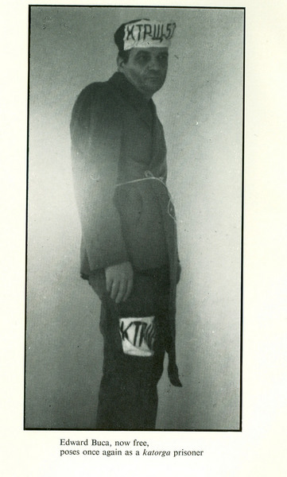

Edward Buca

Introduction
During World War II Edward Buca was a soldier in the Polish Home Army, the Polish underground resistance movement in German-occupied Poland, when he was arrested with a group of other soldiers for alleged treason to the Soviet Union. He spent thirteen years in the Gulag, much of it in Vorkuta. Buca was one of the leaders of the famous prisoner uprising at Vorkuta after Stalin’s death in 1953. Even after he was released from the Gulag and returned to Poland, Polish authorities still treated Buca with suspicion. Buca fled to Sweden in 1959.
Arrest
“It was August 1945. I was nineteen years old. The day before, my partisan friends and I had been sentenced to death by the Soviet Military Court of the Western Ukraine for terrorism, treason, conspiracy, and membership of an illegal military organization. We had been working for the underground Polish Home Army and regarded ourselves as being as much at war against the Soviet Union which had taken over what was formerly Polish Ukraine as we had been against the Nazis who had occupied the same territory earlier. But since the annexation, the Soviets treated us as traitors to the Soviet fatherland and, therefore, fascists.”
Labor
“We were marched to the site of the new mine: no. 20. The mine already in operation was no. 19, and both were surrounded by barbed-wire fences with watch-towers at each corner. When we arrived at the site, some of our guards went to man the towers and the rest stayed with us. Some of us were given picks and shovels, others crowbars, heavy sledgehammers weighing about ten kilos, axes or saws. We were divided into work brigades each with different assignments: clearing snow where the smithy was to be built, preparing the site for the instrumentalka or toolshop, sawing planks for the buildings. A desetnik, or civilian foreman, was in charge. He was to be a department chief of the new mine.”
Suffering
“The hard work in the arctic cold and the poor food wore away our energy and our health. After only three weeks most of the prisoners were broken men, interested in nothing but eating. They behaved like animals, disliked and suspected everyone else, seeing in yesterday’s friend a competitor in the struggle for survival. When work brigades returned to the camp and formed up at the gate you could see only rows of yellow-grey faces, rimmed with snow and ice, their eyes leaking tears which froze on their cheeks. These weren’t normal tears, but were caused by the bitter cold and the feeling of hopeless desperation. This feeling limited our horizons to the thought of the next meal and the chance of getting a little warmer. At the gate we simply stood and waited to be counted and transferred to the camp guard.”
Propaganda
“The hard work in the arctic cold and the poor food wore away our energy and our health. After only three weeks most of the prisoners were broken men, interested in nothing but eating. They behaved like animals, disliked and suspected everyone else, seeing in yesterday’s friend a competitor in the struggle for survival. When work brigades returned to the camp and formed up at the gate you could see only rows of yellow-grey faces, rimmed with snow and ice, their eyes leaking tears which froze on their cheeks. These weren’t normal tears, but were caused by the bitter cold and the feeling of hopeless desperation. This feeling limited our horizons to the thought of the next meal and the chance of getting a little warmer. At the gate we simply stood and waited to be counted and transferred to the camp guard.”
Solidarity
“’I can give you some more advice: be careful how you behave with the authorities and try to stay out of trouble. But the time may come when you must decide to refuse to obey orders, even refuse to work. If this happens, you have to be tough and don’t think about the consequences. They’ll try to break you, but when they realize you’re not going to give in, they’ll only transfer you to another camp in order to save themselves trouble.’ This later proved to be the best possible advice.”
Conflict
“One result of our desperate condition was increased hatred and strife between the different nationalities, with each group trying to blame another for our plight. The basic conflict was between Russians and Ukrainians. The Russians regarded the Ukrainian nationalists and separatists as the real guilty men, and it was a kind of consolation to them to say that the Ukrainians were the real criminals who should be made to suffer for their sins. These Ukrainians, the Russians said, were enemies of the Soviet fatherland, aliens who didn’t deserve to be fed; they should be worked until they dropped dead, and left to rot in the tundra. The Russian prisoners had picked up these ideas from the NKVD officers and guards. When the NKVD noticed this, they gladly encouraged it in order to keep the prisoners divided among themselves. As the only Pole, I was lucky. I wasn’t important enough to hate and both groups looked on me as a kind of neutral.”
Guards
“I was sitting, naked, on the concrete floor of the lavatory corridor in Zamarstynov Prison in Lvov, waiting for my clothes to be disinfected, when an NKVD officer came in. Without a word, he knocked me down. I doubled up to protect my groin. He went on kicking. ‘You bloody Polish fascist! It’s a pity I can’t watch you being executed today, but your sentence will be confirmed, you can be sure. It’ll be a pleasure to watch you die.’ Then he was interrupted. My clothes, and the clothes of the others waiting with me were returned and I began to dress. But I had only got into my underpants when he began kicking me again. I held my clothes in front of me and fled down the corridor, with him behind. Suddenly I slipped on the concrete and fell, just in front of a heavy iron grille. He kicked me again, then stopped, breathless from his efforts.”
Survival
“The heavy work on the pogroska [truck loading] weakened and exhausted me. I was going to have to buy myself some rest. The question was, how? I had nothing to buy it with, nothing to sell. I remembered what the older prisoners had said, that there were opportunities for trading with the free workers. So, the first moment I had, when I was loading coal into a truck close to the engine, I went up to the engine-driver and asked him whether he would be willing to buy something from me. ‘It’s possible,’ he said. ‘I could buy a kufaika [padded jacket], or a bushlat [cotton jacket]. But they’d have to be new, or at least in perfect condition.’” Buca managed to get a kufaika and traded it to the truck driver for two packets of makhorka tobacco and one hundred and fifty rubles with which he could buy extra rations and more items to trade.
Fates
“Buca was released into the hands of the Polish authorities in 1958 but remained under suspicion. “I was under continual surveillance. In 1959 I obtained work in a coal-mine at Katowice in Upper Silesia. All my demands for a passport to go abroad were refused. I decided at last to make my escape from Poland. For several days in cold October weather I hid out near a motel. Then, what I had been waiting for arrived. This was a heavy truck of foreign origin in transit through the country, and sealed so that no inspections are carried out. I discovered it was bound for Sweden. With my knife I cut out a right angle in the canvas roof, and dropped through. The drivers came back and the truck moved off. When the truck finally stopped outside Swedish customs and the drivers got down for a while, I cut my way out and was gone. I was free on Swedish soil!”
Item List
Prisoners
- Olga Adamova-Sliozberg
- Nina Pavlova Aminova
- Anna Andreeva
- George Bien
- Aleksandr Borin
- Edward Buca
- Boris Chetverikov
- Alexander Dolgun
- Nina Gagen-Torn
- Eugenia Ginzburg
- Gustav Herling
- Evfrosiniia Kersnovskaia
- Lev Kopelev
- Anna Larina
- Galina Ivanova Levinson
- Alfred Martinovich Mirek
- Margarete Buber Neumann
- John Noble
- Dimitri Panin
- Susanna Pechuro
- Evgeniia Michailovna Peunkova
- Lev Razgon
- Jacques Rossi
- Joseph Scholmer
- Thomas Sgovio
- Danylo Shumuk
- Michael Solomon
- Vladimir Tchernavin
- Alla Tumanova